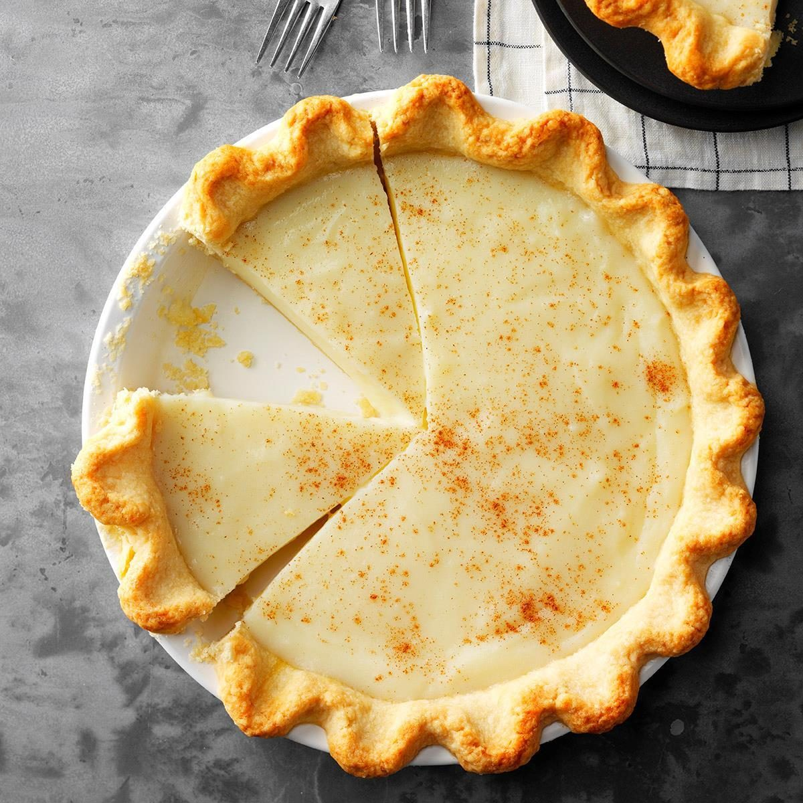

Cream Pie Recipe

Ingredients
- 1 Unbaked 9-inch pie shell
- 2 cups whole milk
- 1/2 cup granulated sugar
- 1/4 cup all-purpose flour
- 3 large egg yolks
- 1 teaspoon vanilla extract
- 2 tablespoons unsalted butter
- 1 cup heavy whipping cream
- 2 tablespoons powdered sugar
Instructions
- Preheat oven to 375°F (190°C) and bake pie shell for 12-15 minutes. Cool completely.
- Whisk sugar and flour in a saucepan, then whisk in milk until smooth.
- Cook over medium heat, stirring, until thickened and bubbly. Cook 1-2 more minutes.
- Whisk egg yolks, temper with some hot mixture, return to saucepan, whisking constantly.
- Cook 2 more minutes, stir in vanilla and butter.
- Pour into pie shell, cover with plastic wrap on surface, and chill at least 4 hours.
- Whip cream and powdered sugar to stiff peaks and spread on chilled pie.
- Slice and serve chilled.